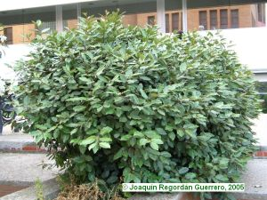
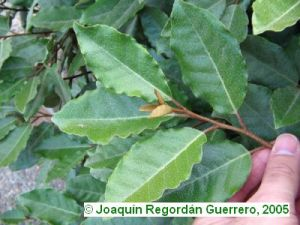

|
Elaeagnus
x reflexa É. Morren & Decne.
in Bull. Acad. Brux.
3: 171 (1836)
E. pungens x E. glabra; E. pungens var. reflexa
|
Eleagnáceas Dicotiledóneas |
| Eleagno |
Arbusto perennifolio |
|
Arbusto perennifolio,
aproximadamente de 1,5 m de altura, aunque puede alcanzar
hasta 5 m (1); ramas largas, delgadas, flexibles y
verdosas.
Hojas alternas, pecioladas, más o menos ovadas, haz verde oscuro cubierto de puntos blanquecinos, con escamas pardas por el envés; lámina simple, de hasta 10 cm, con el borde ondulado. Flores hermafroditas
reunidas en fascículos axilares, blanco-plateadas,
actinomorfas, tetrámeras, periginas; periantio simple,
petaloideo, con las piezas soldadas, tubo anguloso,
lóbulos triangulares; 4 estambre casi sésiles, gineceo con
ovario semi-ínfero.
Fruto no
viable,
al ser una planta híbrida.Floración otoñal (2), pero los ejemplares del Campus no florecen. |
 |
 |
Observaciones:
El nombre
genérico procede del griego “elaeia” (olivo) y “agnos” (cordero).
Taxonomía y nomenclatura inciertas. Al parecer es una especie híbrida creada para jardinería a partir de E. pungens y de E. glabra, sin embargo en otros autores lo consideran una variedad de E. pungens o una especie autónoma. Los frutos de muchos miembros de este género son una fuente muy rica de vitaminas y de minerales, especialmente en las vitaminas A, C y E, flavanoides y otros compuestos bio-activos. Es también una fuente bastante buena de ácidos grasos esenciales. Se está investigando como alimento que sea capaz de reducir la incidencia del cáncer (3) |
| Área de
origen.- No se conoce en estado silvestre. E. pungens procede de
Japón y otras especies del género también son asiáticas, de
regiones templadas. |
|
| Uso en el campus: 3
ejemplares frente a la Facultad de Química (entre el
Edificio Rojo y la Facultad de Química), como arbustos
ornamentales. |
Localización: |
| (1)Andrés
Camacho
C. & S. Rossini Oliva (1998) El Arboreto de El Carambolo - Catálogo de
especies. EMASESA. (2) www.unex.es/botanica/herbarium (3) Plants For A Future - Species Database. 1997-2000. http://www.scs.leeds.ac.uk/pfaf/index.html |
|
| Joaquín Regordán Guerrero & Carlos Romero Zarco, 2005 | |